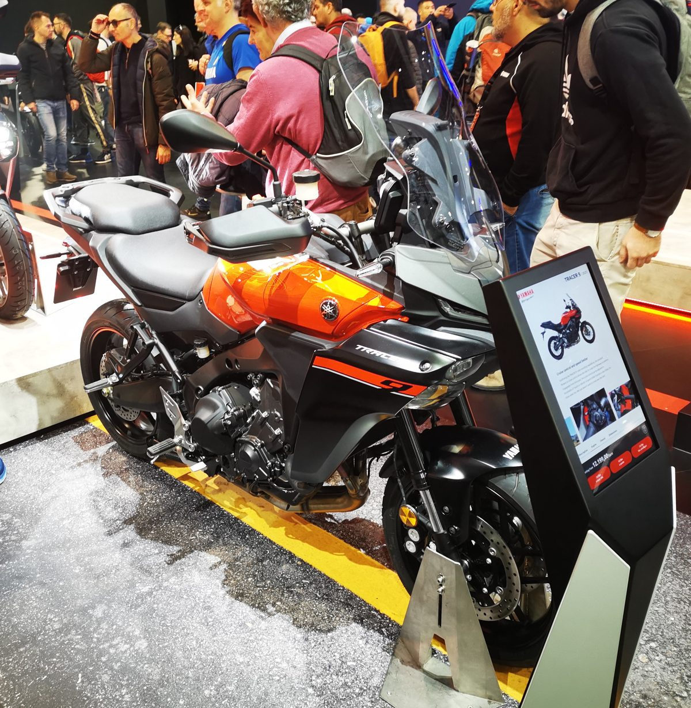
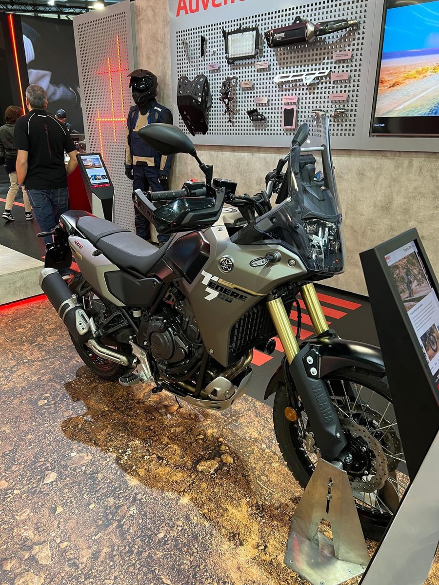
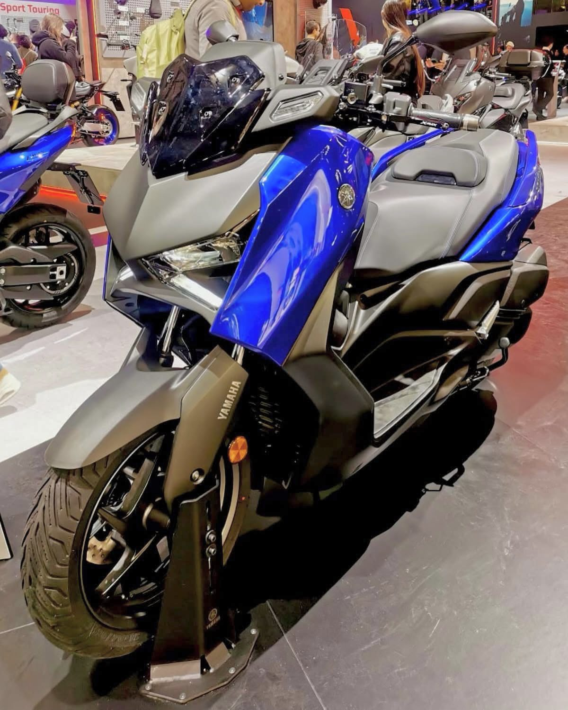

Novedades › Yamaha en EICMA 2027
Novedades · Salón EICMA 2027
Yamaha en EICMA 2027: el salón de los «diapasones» en Milán
El EICMA 2027 (Milán Rho-Fiera, 3-8 de noviembre) ha vuelto a ser la cita donde Yamaha pone sobre la mesa toda su gama. Del CP3 al TMAX pasando por la familia Tenere y los scooters urbanos, este es el recorrido por el stand y las novedades que la marca japonesa ha llevado a la mayor feria de la moto del mundo.

La respuesta rápida
Yamaha ha llegado al EICMA 2027 con un discurso muy claro, y la gran noticia está en los scooters: estrena la serie RW, una familia de Adventure Scooters totalmente nueva con motor de moto (el CP2 de 690 cc y un monocilíndrico de 327 cc), y presenta dos eléctricas nuevas, la NMAX E y la XENTER E. En paralelo, consolida la plataforma CP3 (890 cc) y su deportiva R9 y mantiene viva la Tenere como bandera del adventure. No hay grandes revoluciones mecánicas en naked y trail, pero en el segmento urbano la marca se ha atrevido a crear una categoría nueva y a electrificarse de verdad.
Entrada redactada a partir de la cobertura general del salón y de la trayectoria de la marca. EICMA 2027 se celebra del 3 al 8 de noviembre en Milán; las cifras y la disponibilidad exactas de cada modelo deben confirmarse con el lanzamiento oficial y con el concesionario Yamaha. Las fotografías son de ediciones anteriores del salón, a modo de ejemplo del tipo de motos de las que se habla.
El eje CP3: MT-07, MT-09 y la deportiva R9
El corazón de la gama Yamaha de calle sigue siendo el CP3, el tricilíndrico de 890 cc que alimenta a la MT-09 y, desde hace tres temporadas, a la R9, la deportiva con la que Yamaha regresó al segmento de la supersport media-alta sin litro. En EICMA 2027 el protagonismo ha estado en las decoraciones 2028 y en los retoques de la parte electrónica, más que en cambios de motor: se mantienen los 119 CV en la MT-09 y los 120 CV de la R9, con el modo YCC-T, el quickshifter y el control de tracción ya asentados.
- MT-07 / MT-07 SP: el bicilíndrico de 689 cc (Euro5+), probablemente la naked media más vendida de Europa, con actualizaciones de equipamiento y nueva estética de faro y pantalla.
- MT-09 / MT-09 SP: el tricilíndrico de referencia, con nuevas llantas y el clásico paquete de electrónica IMU a buen precio.
- R9: la deportiva de 890 cc con bastidor Deltabox y estética de la R1, cada vez más asentada como alternativa a la ZX-6R o a la CBR600RR para quien no quiere un litro.
- MT-125 / R125: las llaves de entrada al carnet A1, renovadas para mantener el pico de ventas en el segmento joven.
La familia Tenere y las trail

En el apartado de aventura, la Tenere 700 sigue siendo la gran protagonista: ligereza, fiabilidad del CP2 (689 cc) y una receta que ha convertido la franquicia en el referente del «middle adventure» a precio contenido. Junto a ella, la Tenere 900 (la evolución más polivalente con el CP3) cubre a quien busca más motor y más confort de largo recorrido sin dar el salto a las maxitrail de litro.
El discurso de Yamaha aquí es constante: no hace falta una 1200 para viajar. Con 700-900 cc, menos peso y una electrónica sencilla, la marca sigue ganando terreno a las trail premium más caras y pesadas, un argumento que casa muy bien con el momento del mercado español.
Scooters: la gran noticia del salón
Si algo sostiene el volumen de Yamaha en Europa, son los scooters, y en EICMA 2027 la marca los ha convertido en su gran titán de la presentación. Dos son las novedades de calado: el estreno de la familia de Adventure Scooters RW (una categoría totalmente nueva) y la llegada de dos eléctricas nuevas, la NMAX E y la XENTER E.

Adventure Scooter RW: la nueva categoría
Yamaha ha definido la serie RW como los primeros auténticos scooters de aventura del mundo, un cruce entre moto y scooter pensado para la ciudad y para salirse del asfalto. Tiene tres versiones:
- RW700: el buque insignia, con el bicilíndrico CP2 de 690 cc (51 kW / 69,3 CV a 8.250 rpm y 65 Nm), el cambio automático-manual Y-AMT de 6 velocidades, IMU de seis ejes, modos YRC, suspensión de largo recorrido y ruedas de tipo adventure. Es la apuesta más radical: un scooter con motor de moto y capacidad real de campo.
- RW700 Explore: la misma mecánica con un acabado más premium: suspensión delantera regulable, puños y asiento calefactados, manetas retroiluminadas y detalles en TEXNATURE. Pesa 224 kg en orden de marcha.
- RW350: la versión de acceso con un motor monocilíndrico de 327 cc totalmente nuevo (21,5 kW / 29,2 CV), transmisión automática por correa V-Belt, modos STREET/EXPLORE/ECO, 185 mm de altura libre y control de crucero. Pensada para el día a día con ese toque de aventura.
Las nuevas eléctricas: NMAX E y XENTER E
- NMAX E: el primer scooter eléctrico deportivo de la familia MAX, equivalente a un 125 (carnet A1). Lleva un grupo motriz eAxle compacto con transmisión por correa, batería de 3,5 kWh, tres modos de conducción, TCS y pantalla TFT de 5" con navegación. Una respuesta inmediata y silenciosa pensada para la ciudad.
- XENTER E: un scooter eléctrico de rueda alta (16") y piso plano, también equivalente a un 125, con el mismo eAxle y batería de 3,5 kWh. Estabilidad y confianza para el trayecto urbano, con gran espacio bajo el asiento.
Junto a estos estrenos, Yamaha mantiene la gama que ya conocemos: el TMAX 560 (Tech MAX con pantalla regulable, asiento y puños calefactados), los XMAX 300 y 125 (con las versiones Tech MAX y Tech MAX+, ahora también en colores nuevos), los NMAX 125 y 155 (el 155 con la transmisión YECVT de dos modos), los tres-llantas Tricity y el urbano RayZR. La apuesta eléctrica también se refuerza con los NEO’s y su versión Dual Battery.
Eléctricos y movilidad urbana
La estrategia eléctrica de Yamaha ha pasado de ser discreta a ser protagonista en el segmento de los scooters urbanos. Con la NMAX E y la XENTER E (ambas equivalentes a un 125 y pensadas para el carnet B/A1) la marca cubre el hueco entre la movilidad ligera y el scooter de combustión, con un mensaje claro: eléctrico aquí y ahora, en la ciudad. Fuera del entorno urbano, el motor de combustión sigue siendo el rey, y las RW lo demuestran con el 690 CP2.
La información sobre las nuevas decoraciones, versiones y precios definitivos de cada modelo se irá confirmando en las próximas semanas. Esta entrada recoge la lectura general del stand en EICMA 2027 y no sustituye a la información oficial de Yamaha.
Conclusión
El EICMA 2027 de Yamaha tiene una protagonista clara: la familia de scooters. Si las naked y las trail mantienen el rumbo con retoques de decoración y electrónica, es en el apartado urbano donde la marca ha dado el golpe de efecto, con dos eléctricas nuevas (NMAX E y XENTER E) y, sobre todo, con la serie RW, el primer intento serio de un scooter de aventura con motor de moto. Es, en conjunto, una estrategia de doble juego: revolución donde vende (la ciudad) y evolución donde ya domina (naked, trail y maxiscooters). Y si lo que buscas es ahorrar o darle más carácter a tu scooter, eso ya es cosa del taller: la mecánica CVT también es territorio Yamaha, y de eso hablamos en la entrada de mecánica de la sección Taller.
Fuentes
- EICMA — salón internacional de la moto 2027 (Milán, 3-8 noviembre)
- Yamaha Motor Europa — gama y novedades oficiales
- Yamaha Motor España — precios y concesionarios
- Yamaha — brochure oficial de la gama de scooters 2027 (serie RW, NMAX E, XENTER E y resto)
- Wikimedia Commons — Yamaha Tracer 9 en EICMA (Saggittarius A, CC BY 4.0)
- Wikimedia Commons — Yamaha Ténéré 700 en EICMA (AVMOTO, CC BY-SA 4.0)
- Wikimedia Commons — Yamaha XMAX (MotorideSA, CC BY-SA 4.0)